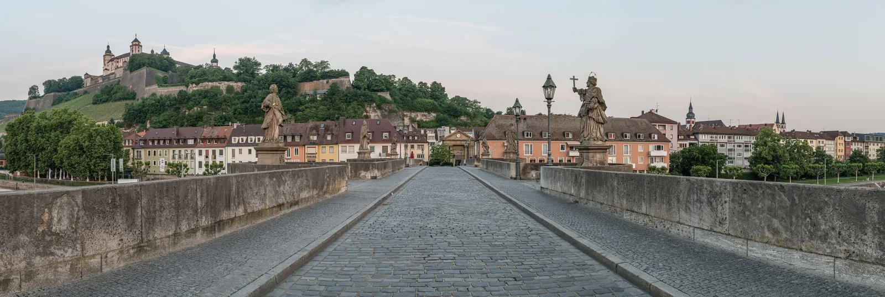
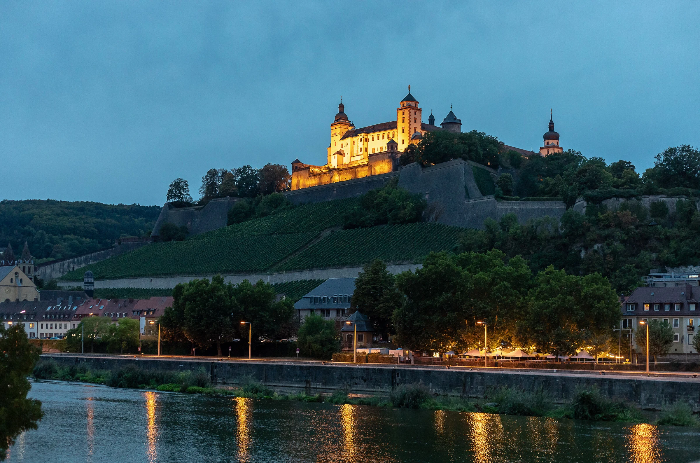
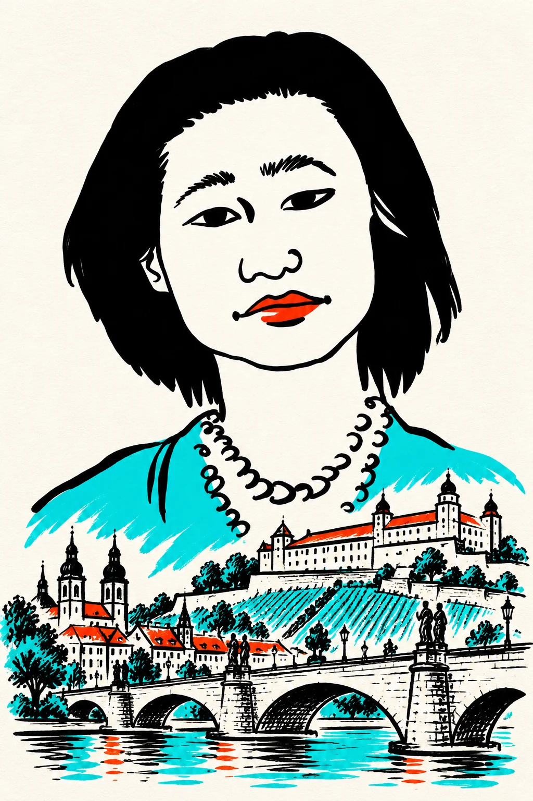
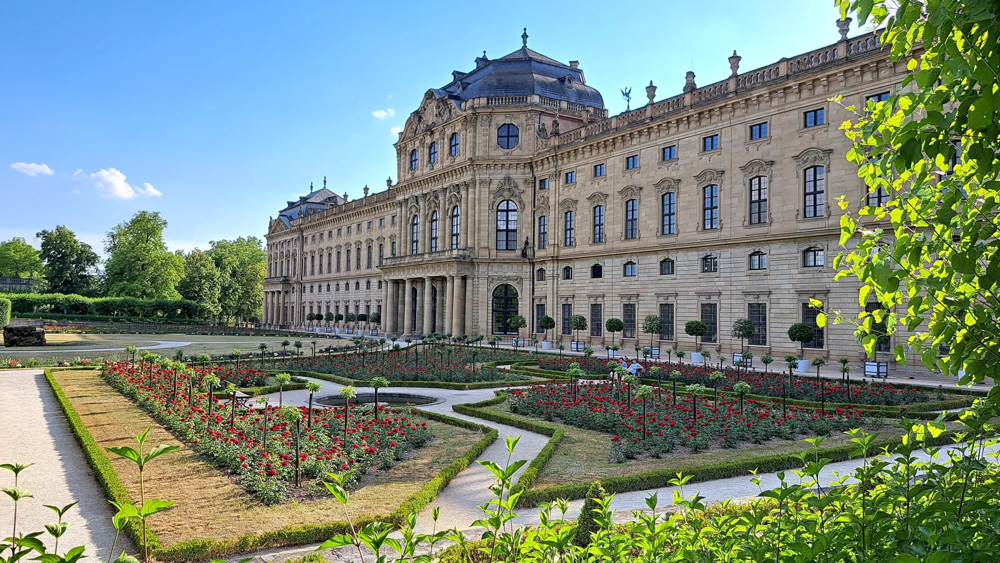
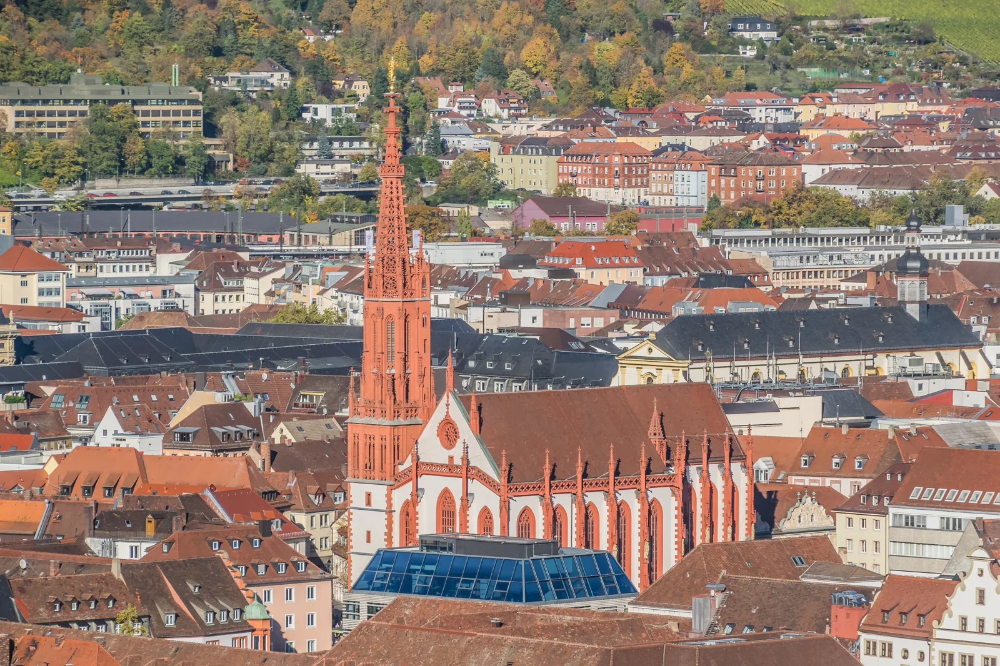
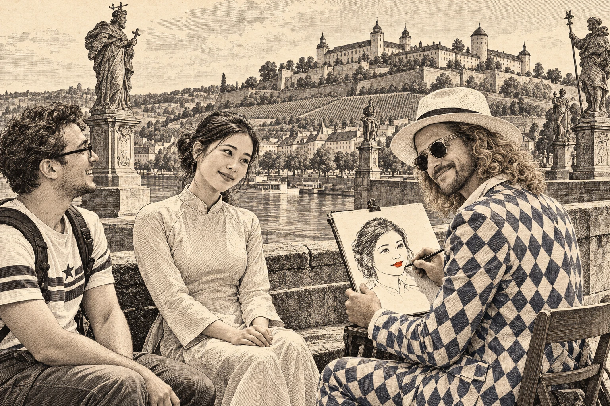

01Alte Mainbrücke
Stone statues, river views and the place where Würzburg comes together.

LOCAL ARTIST. WORLDWIDE MISSION. YOUR MOMENT.
Come for the city. Leave with your own piece of it. Meet Phil Splash, the artist turning a Würzburg visit into a portrait worth keeping.

YOUR NEXT CAMERA ROLL, BUT BETTER
The fortress. The bridge. The city’s unmistakable details. See them, fall for them — then make them part of your own portrait story.

01Stone statues, river views and the place where Würzburg comes together.

02Baroque drama. Garden geometry. A very good reason to slow down.

03The red spire, the old-town rooftops, the colour you remember.
AI design concept · final artwork by agreement
THE WÜRZBURG PORTRAIT CONCEPTS
A travel memory with a point of view. Your portrait takes centre stage; Marienberg, the bridge or the city skyline becomes part of the composition. Pick a direction and develop the final idea with Phil.
Bold portrait lines, turquoise accents and the fortress woven into the silhouette.
per portrait from a photo
Photo portrait: €30 each. The two city compositions are AI-developed design ideas based on Phil’s originals. Background, format and any additional work are agreed before ordering.
Choose your direction
Agree details & send a photo
Make your visit personal
THE CITY HAS SIGHTS. YOUR GROUP GETS A MOMENT.
A real artist, your whole group and portraits taking shape in front of you. Invite Phil to your Würzburg itinerary — at your hotel or an agreed location in Mainfranken.
Advance booking required. Meeting point and venue permission are agreed individually.

OLD CITY. NEW STORY.
Würzburg has its famous views. Then there is the artist you meet, the moment you share and the face he draws. Phil’s million-portrait mission becomes a very personal stop on your trip.

WÜRZBURG ORIGINALS / PHIL SPLASHPhil Splash is artist and designer Philipp Mulfinger, based in Würzburg. His portrait project began in Munich’s underground in 2010. Today, the mission is to portray one million people — through encounters on the road, live events and commissioned work.
His work has taken him to international events and across cultures. Now your visit to Bavaria can become part of that story, with a portrait created by the artist himself.
THE ARTIST’S OWN LINES
These are actual portraits by Phil. The city editions above explore what could come next.


A FEELING THAT NEEDS NO TRANSLATION
See Phil’s approach in two films from his own channel: Portraits 4 Free and encounters in Vietnam.
The Bavarian suit. The sketchbook. A smile.
A portrait can start a conversation anywhere.
YouTube unavailable? The original portrait gallery and the enquiry form work without it.
FAQ
Alongside the Residence, Old Main Bridge and Marienberg Fortress, you can request a private portrait experience with Phil Splash. Live sessions are available for groups from 10 people, subject to availability and an agreed venue.
A portrait created from a photo costs €30. For live group sessions and larger photo orders, request an individual group quote. Format, background requests and any additional services are confirmed before you order.
Yes. Start with your travel date, number of portraits and preferred deadline. Send reference photos by email after the details have been agreed. Only send photos you have permission to use.
Ask for a Würzburg-inspired background, such as Marienberg Fortress. The exact design, format and any additional work are agreed with Phil. The website mock-up is an illustration of a possible layout.
There is no walk-in location or regular street schedule. Phil can join your group at a suitable hotel or agreed venue in Würzburg or Mainfranken. Other locations in Bavaria can be requested. Date, location and any permissions must be confirmed.
Yes, you can write your enquiry in Chinese, Japanese, English or German. Tell Phil your preferred language. Live interpretation is not included unless specifically arranged.
The time required depends on the style, number of people and schedule. Paper or digital format and collection or digital delivery are agreed in advance. There is no guaranteed same-day service or automatic booking.
LET’S MAKE YOUR VISIT PERSONAL
Tell Phil what you have in mind. This prepares an email to info@phil-splash.de. Your request is non-binding; a booking or order is confirmed only after you agree the details.
info@phil-splash.de ↗Or email Phil directly